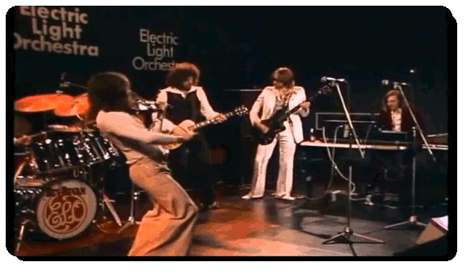

E.L.O. (Electric Light Orchestra)

Fue desde mediados de los años 70 y hasta principios de los 80, cuando la banda inglesa Electric Light Orchestra, también conocida como
E.L.O., alcanzó las más altas capas de popularidad y ventas en la música. Un intento por fusionar el rock clásico con el sinfónico, el pop e influencias de la música disco, utilizando instrumentos poco convencionales. Todo ello dotó al grupo de un repertorio de canciones meritorias para formar parte de la discoteca de cualquier amante de la música. Sonidos de violines se mezclaban con el sonido de las guitarras y las baterias, creando un ambiente de excitación contenida.
Grandes álbumes como Time o Discovery, su octavo disco y uno de los que más grato recuerdo me traen a la memoria con canciones como "Shine a Little Love", "Don't Bring Me Down" o "Last Train to London", creaban un climax especial, con un acercamiento muy sugerente a la música disco. Inspiración, sofisticación, innovadores, exquisita producción, buenos arreglos y la magia tocándoles con una varita mágica, les hicieron dueños de la creación de uno de esos discos imprescindibles. La banda sonora para la película Xanadu acompañados por la voz de Olivia Newton-John fue otro bombazo en ventas, ayudándoles a alcanzar los 50 millones de discos en todo el mundo a lo largo de su carrera y entrar en el Salón de la Fama del Rock And Roll.
Xanadu (con Olivia Newton-John)
videos.videomusica.es ® is a registered trademark. All content © 2016-2023 by izugarria.
Todos los contenidos del portal incluyendo, imágenes, vídeo, nombres, marcas y logos, son propiedad de sus respectivos dueños.